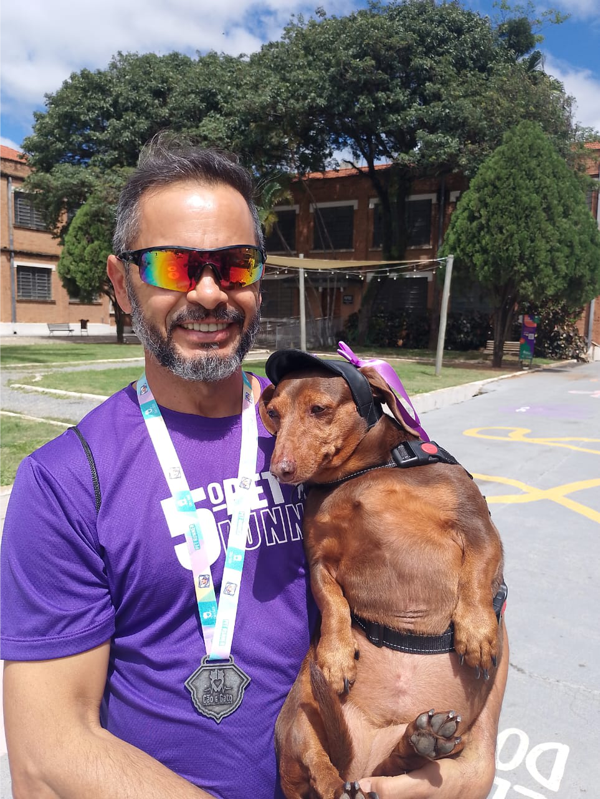
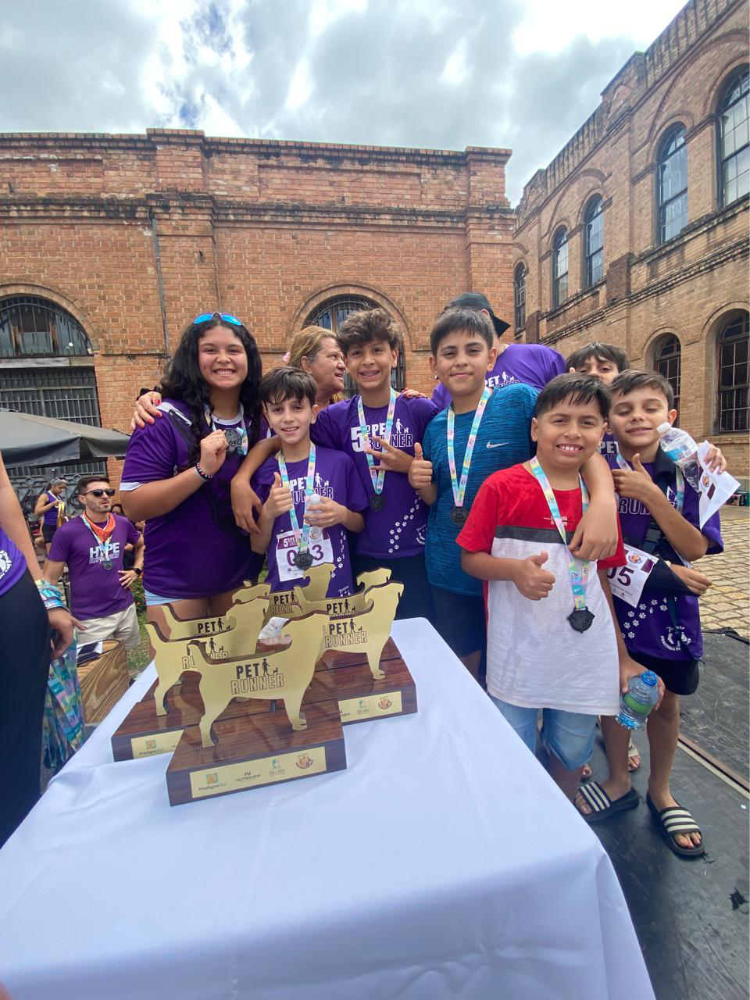
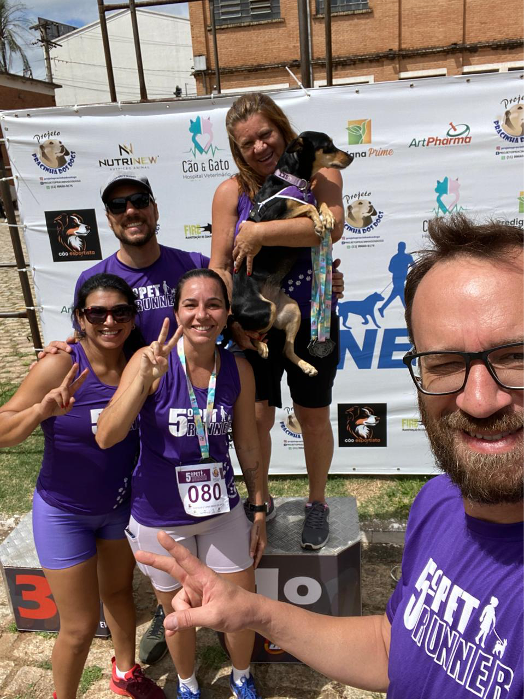

Sobre o Evento
Vem aí a 6ª edição do Pet Runner Jundiaí, caminhada e corrida que une você e seu animal de estimação celebrando essa união também no esporte mais popular do mundo.
No dia 30 de novembro de 2025 no Espaço Expressa da Av dos União dos Ferroviários 1760 em Jundiaí SP
Organizado pelo Projeto Pracinha dos Dogs, ONG com mais de 14 anos de experiência em criar momentos de carinho com os pets.
Modalidades
- Caminhada Pet (2.5KM): Livre para todos com seus pets.
- Corrida (2.5KM e 5KM): Somente para humanos, com premiação para os 3 primeiros de cada categoria (masculina e feminina).
Regras de Inscrição
Na caminhada, todos podem participar com quantos pets quiserem. Mas só concorrerão aos troféus quem estiver com número de peito inscrito.
Na corrida, participantes de qualquer idade podem competir (menores com responsável). A inscrição é por pessoa, não por pet.
Informações Gerais
Edição:
6º Pet Runner
Data:
30 de novembro de 2025
Local:
Espaço Expressa Jundiaí (frente do Poupatempo)
Abertura da Arena:
07h
Percurso:
Saída da Fatec - Av. dos Ferroviários
Valores
- 1º Lote até 10/08: R$ 85,00
- 2º Lote até 10/11: R$ 100,00
*NÃO HAVERÁ TAXA ESPECIAL PARA GRUPOS.
Tamanho das Camisetas
Masculinas e Femininas
| Tamanho | Altura | Largura |
|---|---|---|
| PP | 62,5 cm | 43,5 cm |
| P | 64,5 cm | 47 cm |
| M | 69,5 cm | 53 cm |
| G | 72,5 cm | 55 cm |
| GG | 76 cm | 57,5 cm |
| G1 | - | - |
| G2 | - | - |
| G3 | - | - |
Programação Oficial
- 07h00 - Abertura
- 07h30 - Largada Corrida 5KM
- 08h30 - Caminhada Pet
- 11h00 - Premiação masculina e feminina + Sorteio dos troféus
- 12h00 - Encerramento
Inscrição
Retirada do Kit: 29/11 das 11h às 16h (local a definir)
Documentos: RG + comprovante de pagamento
Menores: Autorização do responsável